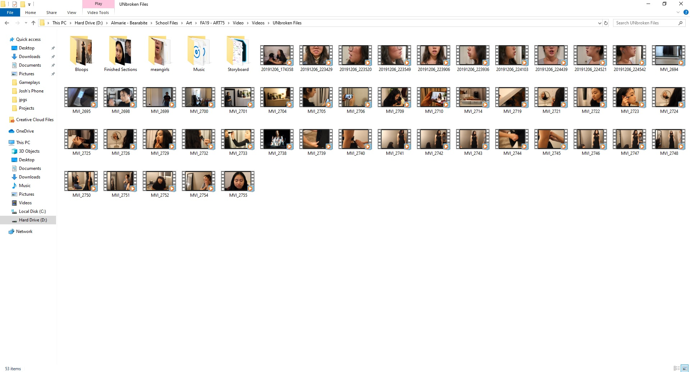
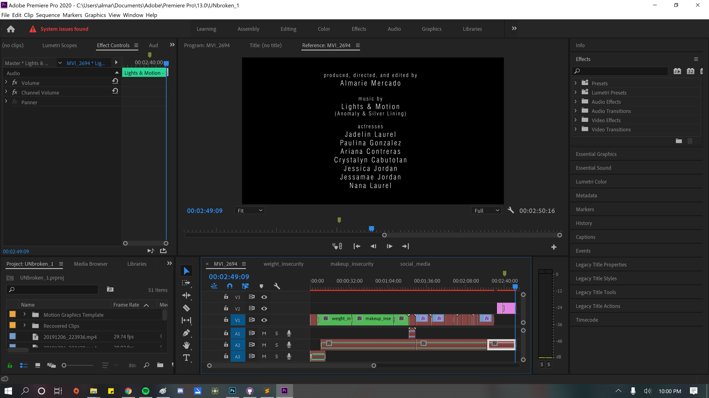
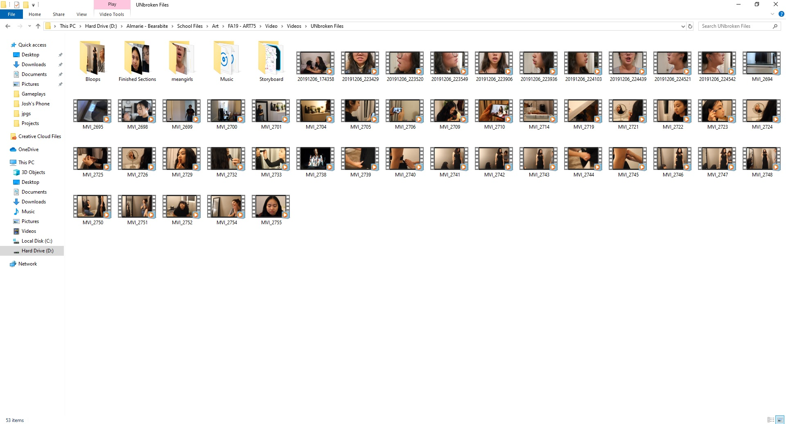
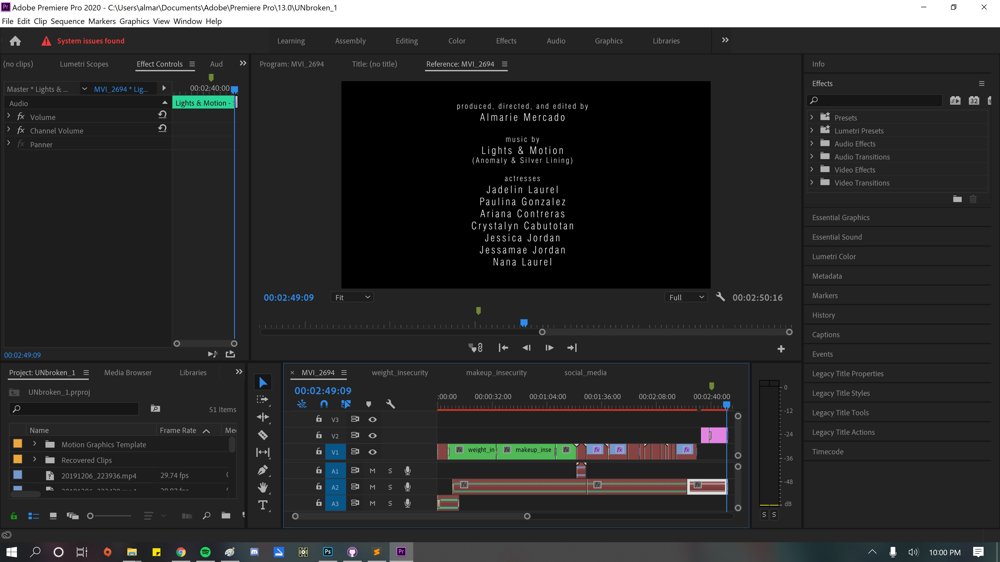

process:
i first came up with the idea as i was brainstorming how i could represent my newfound knowledge i acquired from my art 75 class. i then thought of artworks that i used as references. this led to the overall outcome of my storyboard for the project. with the help of friends and family, i was able to record multiple scenes and compile them together to create this successful art video. it was kind of difficult working with people i know because there were many times that we would just outburst in laughter. however, we managed to get the job done. i used a DLSR Canon Rebel T6 and my Samsung Galacy 10 to record everything. i then edited all the files into Adobe's Premiere Pro using cuts, transitions, color-correcting, and text.
. . .
(red-coded info for "misplaced items," but this was how the file looked on premiere in general).